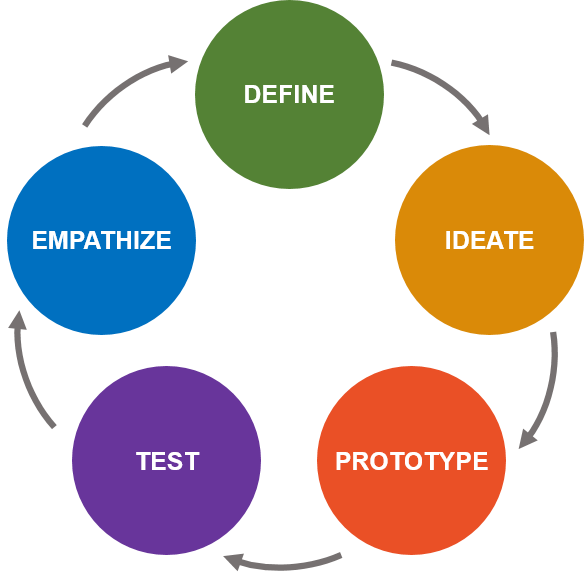

- Empatia: é necessário entender o cliente/usuário. Observar, engajar e praticar a imersão.
- Definição do problema: a partir da fase 1, delimitamos as necessidades do público-alvo.
- Ideação: como fazer e o que deve ser feito. Parte abstrata do projeto.
- Prototipação: a ideia é testada e a inovação disruptiva é aplicada, ou seja, saímos de um padrão para outro.
- Teste: o projeto é testado, reunindo feedbacks, melhorando designs anteriores e interagindo mais com o usuário.
O que é Design Thinking?
Design Thinking é uma abordagem focada no ser humano que busca resolver problemas por meio da observação, do engajamento e da imersão com o usuário. Em vez de focar apenas no produto final, essa metodologia coloca as necessidades reais e desejos do cliente no centro de todo processo de desenvolvimento. Através do ciclo criativo, a equipe consegue validar ideias e oportunidades antes de implementá-las de forma definitiva. Essa mentalidade reduz riscos e custos, o que permite que os desenvolvedores e designers criem produtos significativos e funcionais para a vida cotidiana e industrial.
Módulos do processo
